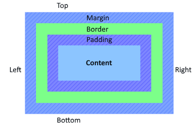

Margin
Margin is the space between the border and the next piece of content or element of your design.
This is outside of the border.
Margin goes around all four sides of the content and you can individually change and set each of the margins.
Border
Border is the space that is between your margin and your padding.
Borders can be styled to suit your needs, color,size and decoration.
Padding
Padding is the space that is inside your element, that is between your content and the inside of your border
Like Margin, Padding goes around all four sides of your content and you can individually change and set each of these sides.
Box Model
The image above is often referred to as the "Box Model".
This image will help us understand where Margin, Border and Padding are used.
When dealing with Margin and Padding, If you do not want to define and style them individually,
You can style them all on one line.
Example below.
p {margin: 10px 15px 20px 25px }
With this, We always start from the top and work our way around clockwise.So in the example code as shown above,
Margin-top will be 10px, Margin-right will be 15px, Margin-bottom will be 20px and Margin-left will be 25px.